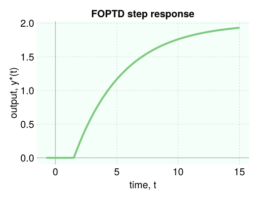
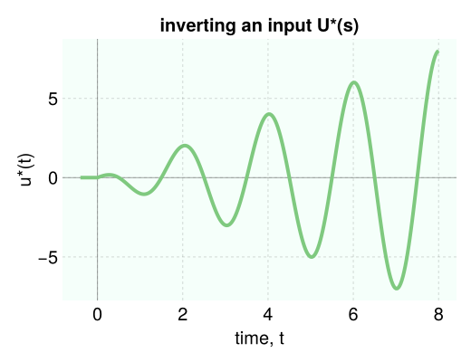

Simulation
we wish to simulate the response $y(t)$ (output) of a linear, time-invariant system, characterized by a transfer function $g(s)$, to an input $u(s)$.

pass the output $Y(s)$ in the frequency domain into the function simulate to invert it into the time domain to obtain $y(t)$. simulate returns a time series data frame (a DataFrame, see DataFrames.jl docs), with a :t column for the times and an :output column for $y(t)$. we can then plot the time series data, interpolate the data to obtain the value of $y(t)$ at a particular time $t=\Tau$, etc. we provide examples below.
response of an underdamped second-order system to a unit step input
g = 4 / (4 * s ^ 2 + 0.8 * s + 1) # second order transfer function, underdamped
U = 1 / s # unit step input
Y = g * U # system output
data = simulate(Y, 50.0) # simulate until t = 50, returns DataFrame
data[:, :t] # array of times, tᵢ's
data[:, :output] # array of outputs, yᵢ's ≈ y(tᵢ)'sthen plot the time series via:
viz_response(data, title="SO underdamped step response")
response of a first-order plus time delay system to a unit step input
K = 2.0 # gain
τ = 4.0 # time constant
θ = 1.5 # time delay
g = K * exp(-θ * s) / (τ * s + 1) # FOPTD transfer function
U = 1 / s # step input
Y = g * U
data = simulate(Y, 15.0) # simulate until t = 15
viz_response(data, title="FOPTD step response")
inverse Laplace transform
to emphasize that our simulate function takes a function of the complex frequency s and inverts it into the time domain, consider the Laplace transform of $t \cos(at)$:
\[\mathcal{L}[t \cos(at)] = \dfrac{s^2-a^2}{(s^2+a^2)^2}.\]
we can numerically invert $\dfrac{s^2-a^2}{(s^2+a^2)^2}$ as follows:
a = π
U = (s^2 - a^2) / (s^2 + a^2) ^ 2
data = simulate(U, 8.0, nb_time_points=300) # simulate until t=8, use 300 time points for high resolution
viz_response(data, title="inverting an input U(s)", ylabel="u(t)")the nb_time_points argument allows us to return a time series with a higher resolution in time. if the plot of the response appears jagged, likely you need to increase nb_time_points.

$y(t)$ at an arbitrary time $\Tau$
the simulate function returns an array of times $t_i$'s and corresponding $y_i=y(t_i)$'s. if we wish to know $y(t)$ at a particular time $t=\Tau$, we can call interpolate to linearly interpolate the time series data.
for example, to obtain the output of a first-order system with time constant $\tau$ in response to a unit step input at $t=\tau$:
τ = 3.45
g = 1 / (τ * s + 1) # FO system
data = simulate(g / s, 10.0) # unit step response
y_at_τ = interpolate(data, τ) # 0.63 ≈ 1 - 1/e, as we expectunder the hood
under the hood, simulate converts the system passed to it into a state space ODE (a system of ODEs) in the time domain and uses DifferentialEquations.jl (see here) to numerically solve the resulting ODE.
detailed docs
Controlz.simulate — Functiondata = simulate(Y, final_time, nb_time_points=100) # invert Y(s)simulate the output $y(t)$ of an LTI system, given the Laplace transform of the output, $Y(s)$, Y.
in other words, simulate inverts an expression in the frequency domain into the time domain.
arguments
Y::Union{TransferFunction, ClosedLoopTransferFunction}: the Laplace transform of the output $y(t)$. usually formed by $g(s)U(s)$, where $U(s)$ is the Laplace transform of the input and $g(s)$ is the transfer function governing the dynamics of the system.final_time::Union{Int64, Float64}: the duration over which to simulate the output of the LTI system, starting at time zero.nb_time_points::Int=100: the number of time points at which to save the solution $y(t)$.
two time points preceding $t=0$ are included to illustrate that it is assumed $y(t)=0$ for $t<0$.
returns
data::DataFrame: data frame containing two columns::tfor time $t$ and:outputfor $y(t)$. each row corresponds to a $(t_i, y(t_i))$ pair. i.e., rowiof the:tcolumn is time $i$, $t_i$, and rowiof the:outputcolumn is $y_i=y(t_i)$. access the columns bydata[:, :t]anddata[:, :output].
examples
simulate the first order step response to a step, given the Laplace transform of the output, Y:
g = 4 / (3 * s + 1) # first-order transfer function g(s)
U = 1 / s # unit step input U(s)
Y = g / s # output Y(s)
data = simulate(Y, 12.0) # time series data frame
data[:, :t] # array of time points tᵢ
data[:, :output] # array of corresponding outputs y(tᵢ)
first(data, 5) # show the first 5 rows of the data frame
# output
5×2 DataFrame
Row │ t output
│ Float64 Float64
─────┼───────────────────────
1 │ -0.6 0.0
2 │ -1.0e-5 0.0
3 │ 1.0e-5 1.33333e-5
4 │ 0.123721 0.161606
5 │ 0.247432 0.316671Controlz.interpolate — Functiony_at_Τ = interpolate(data, Τ)interpolate a data frame containing a time series characterizing $y(t)$, with :t and :output columns, whose rows are $(t_i, y(t_i))$ pairs. interpolate the data to approximate the function $y(t)$ at a new time Τ, i.e. $y(\Tau)$.
simulate returns such a data frame, thus interpolate is useful for obtaining the solution at a particular time Τ that is not necessarily present in the :t column of data.
arguments
data::DataFrame: a data frame of a time series, containing a:tcolumn for times and:outputcolumn for outputs.Τ::Float64: the new time at which we wish to know $y$. i.e. we wish to know $y(\Tau)$.
Returns
y_at_Τ::Float64: the value of $y$ when $t$ is equal toΤ, $y(\Tau)$, according to linear interpolation.
example
the unit step response of a first-order process with time constant $\tau$ is $\approx 63\%$ of the final value when $t=\tau$.
τ = 3.45
g = 1 / (τ * s + 1) # FO system
U = 1 / s # input, U(s)
Y = g * U # output, Y(s)
data = simulate(g / s, 10.0) # output, y(t)
y_at_τ = interpolate(data, τ) # ≈ y(τ)
# output
0.6320802858877126